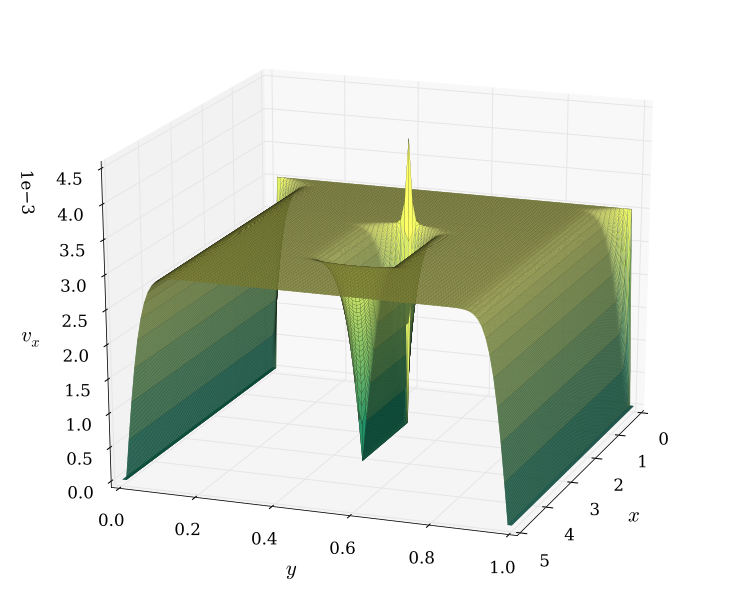
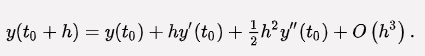
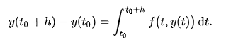
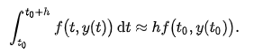
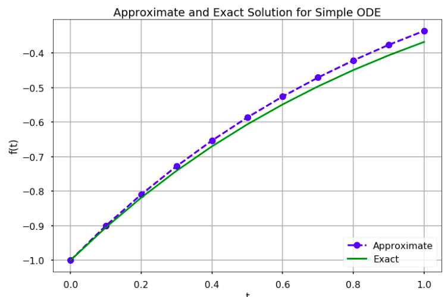

To Solve Ordinary Differential Equation using Euler's method
In mathematics and computational science, the Euler method (also called forward Euler method) is a first-order numerical procedure for solving ordinary differential equations (ODEs) with a given initial value. It is the most basic explicit method for numerical integration of ordinary differential equations and is the simplest Runge-Kutta method. The Euler method is named after Leonhard Euler, who treated it in his book Institutionum calculi integralis (published 1768-1870). The Euler method is a first-order method, which means that the local error (error per step) is proportional to the square of the step size, and the global error (error at a given time) is proportional to the step size. The Euler method often serves as the basis to construct more complex methods, e.g., predictor-corrector method.

The Euler method can be derived in a number of ways. Firstly, there is the geometrical description above. Another possibility is to consider the Taylor expansion of the function y and t0 :

The differential equation states that y'=f(t,y). If this is substituted in the Taylor expansion and the quadratic and higher-order terms are ignored, the Euler method arises. The Taylor expansion is used below to analyze the error committed by the Euler method, and it can be extended to produce Runge-Kutta methods.
A closely related derivation is to substitute the forward finite difference formula for the derivative,
y'(t0) ≈ y(t0 + h) - y(t0)/h
in the differential equation y'=f(t,y). Again, this yields the Euler method.[8] A similar computation leads to the midpoint method and the backward Euler method. Finally, one can integrate the differential equation from t0 to t0 + h and apply the fundamental theorem of calculus to get:

Now approximate the integral by the left-hand rectangle method (with only one rectangle):
Combining both equations, one finds again the Euler method. This line of thought can be continued to arrive at various linear multistep methods.
# Euler method in Python
import numpy as np
import matplotlib.pyplot as plt
plt.style.use('seaborn-poster')
# Define parameters
f = lambda t, s: np.exp(-t) # ODE
h = 0.1 # Step size
t = np.arange(0, 1 + h, h) # Numerical grid
s0 = -1 # Initial Condition
s = np.zeros(len(t))
s[0] = s0
for i in range(0, len(t) - 1):
s[i + 1] = s[i] + h*f(t[i], s[i])
print(s)
plt.figure(figsize = (12, 8))
plt.plot(t, s, 'bo--', label='Approximate')
plt.plot(t, -np.exp(-t), 'g', label='Exact')
plt.title('Approximate and Exact Solution \
for Simple ODE')
plt.xlabel('t')
plt.ylabel('f(t)')
plt.grid()
plt.legend(loc='lower right')
plt.show()
Click here to perform simulation
Take Observations from the method and tabulate it for the given intervals.
Plot a graph also. (Value vs Function).

Hence we have calculated the value of Ordinary Differential Equation using Euler's method.